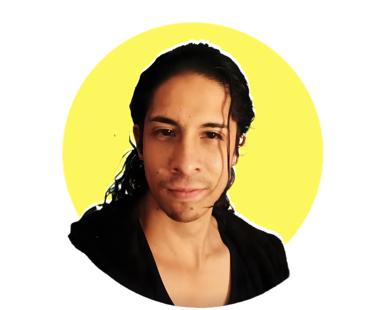

Proyectos


Transformo ideas en soluciones digitales innovadoras. Especializado en desarrollo full-stack con tecnologías modernas.

Soy un desarrollador de software apasionado por crear soluciones tecnológicas que marquen la diferencia. Con experiencia en desarrollo full-stack, me especializo en construir aplicaciones web robustas y escalables utilizando las últimas tecnologías.
Mi enfoque se centra en escribir código limpio, seguir las mejores prácticas y mantenerme actualizado con las tendencias de la industria. Disfruto trabajando en equipo y enfrentando desafíos complejos que requieren soluciones creativas.
TechCorp Solutions
2022 - Presente
Lidero el desarrollo de aplicaciones web escalables y dirijo un equipo de 5 desarrolladores. Implementé arquitecturas de microservicios que mejoraron el rendimiento en un 40%.
Digital Innovations Inc.
2020 - 2022
Desarrollé y mantuve múltiples aplicaciones web usando React y Node.js. Colaboré estrechamente con equipos de diseño y producto para entregar soluciones de alta calidad.
StartupLab
2019 - 2020
Comencé mi carrera profesional desarrollando funcionalidades para aplicaciones móviles y web. Aprendí las mejores prácticas de desarrollo y metodologías ágiles.
Universidad Tecnológica
2015 - 2019
Graduado con honores. Especialización en desarrollo de software y bases de datos. Proyecto de tesis enfocado en inteligencia artificial aplicada.
Estoy siempre interesado en nuevas oportunidades y proyectos desafiantes. No dudes en contactarme para discutir cómo podemos trabajar juntos.